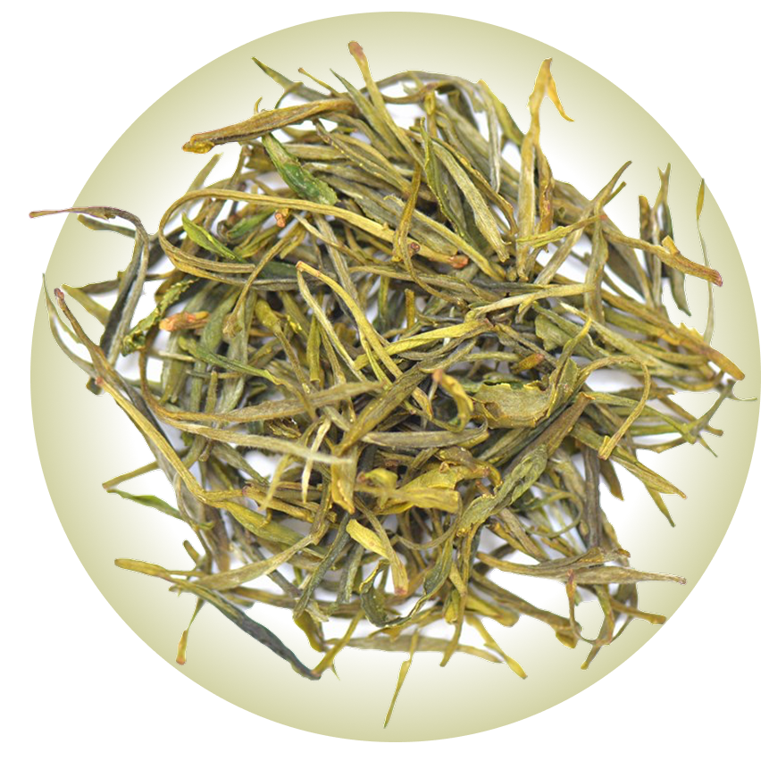

На заре правления династии Тан жил один монах, который следовал так называемому Пути Истинного Белого Журавля. Он странствовал подобно облаку среди четырёх морей. Духовные и физические практики позволили ему достичь абсолютной гармонии с собой и окружающим миром. Вместе с гармонией он обрёл бессмертие и решил остановить свой Путь в горах Хо Шань. Монах привёз туда 8 ростков чайного дерева, посадил и тщательно ухаживал за ними. Со временем эти 8 кустов широко разрослись и получили известность в округе. Во времена Пяти Династий император избрал Хо Шань Хуан Я за его уникальные цвет, запах и вкус обязательным чаем для поставок ко двору.
Заваривать горячей водой (70–80°С) в фарфоровой гайвани или чайнике из пористой глины. Пропорция заварки к воде: 6 г на 100 мл. Для первого раза настоять 15 секунд, далее пить проливом с постепенным увеличением экспозиции. Выдерживает 10 завариваний..
